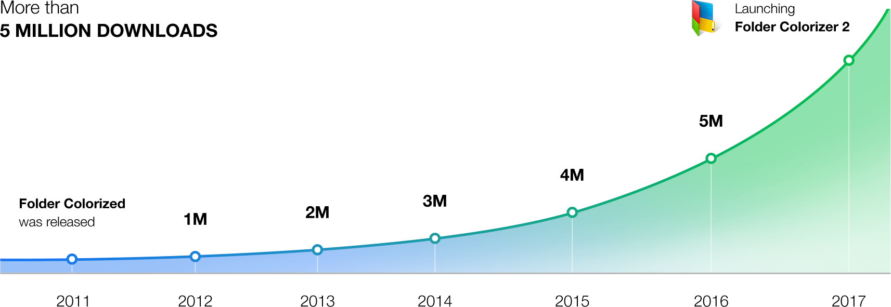

The Original Folder Colorizer
Introducing the 2nd iteration of our critically-acclaimed Folder Colorizer. Originally
introduced in 2011. The innovation in Folder Colorizer was its straightforward user experience – ability
to change folder colour in 1-click, as if it’s pre-built into the system. Now this seems obvious, but in
2011 it was first of its kind. This tiny detail drew extreme attention & organic popularity to the
product. Today, it’s reaching 5 million downloads
We’re proud that the original concept &
design of Folder Colorizer 2 is setting a new bar for the entire category of compact Windows Utility
Software.


"Check out Folder Colorizer to add a dab of paint to the place and inject some color and life into the operating system. You may be surprised at the difference in not just your mood, but the efficiency of navigation."
By Mark O'neill
PCWorld | FEB 12, 2013 2:43 PM PT